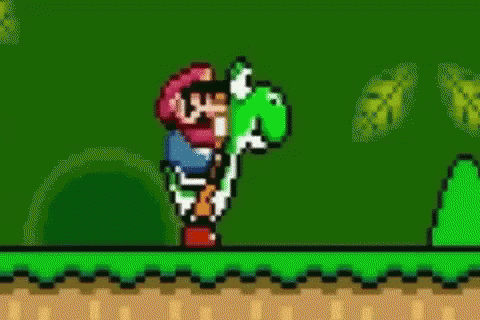

Yoshi peut faire des bons de géants ! Dans "Yoshi: Save the Baby", faites un double saut et accédez à des mondes cachés !

Yoshi est un glouton ! Dans "Yoshi : Save the Baby", goûtez aux nombreux fruits mais attention : Tous ne sont pas comestibles

Dans "Yoshi : Save the Baby", une fois l'objet ingurgité, Yoshi peut s'en servir de projectiles pour tuer ses nouveaux ennemis !

Dans "Yoshi : Save the Baby", débloquez le mode aérien, faites voler votre Yoshi et découvrez de nouvelles fonctionnalités !